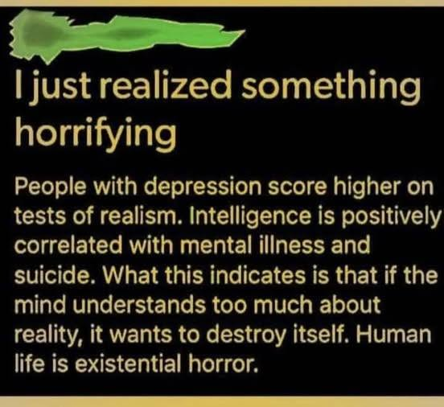

Una opinión acerca de Bill Wiese y su experiencia de
"23 Minutos en el Infierno"
El cura orador habla sobre una experiencia que tuvo, una "experiencia extracorporal". Hablé con la IA para que me diera un resúmen y encontré que el cura orador escribió un libro al respecto en 2006 llamado "23 minutos en el infierno".→ Continuar Leyendo...
Correlacion entre Inteligencia y Depresion

Este es un posteo que me encontré en X (anteriormente Twitter) que me resultó aparte de dramático, engañoso. Sin embargo apelaba a algo que he sentido antes y me motivó a generar una respuesta.→ Continuar Leyendo...